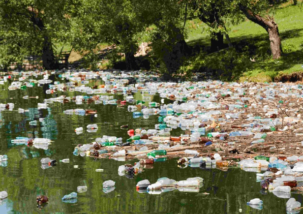

Your contribution has alot more than meets the eye...
Below is a list of the most popular plastic items and how many you bought this week
You purchased [...] plastic bottles, which was lower than the national average.

- Plastic bottles contain microplastics that can leak into and pollute water sources.
- Plastic bottles can destroy ecosystems and endanger marine life if animals came into contact with it
You purchased [...] plastic straws, which was lower than the national average.
- Straws clog our lakes, streams and gutters, reducing levels of urban drainage and increasing the small scale flooding risk
- Plastic straws can sicken marine animals if they become lodged in their throats, noses and stomachs
You purchased [...] plastic coffee cups, which was lower than the national average.
- Less than one percent of plastic coffee cups are recycled, with many ending up as part of landfill which is also dangerous.
- The pollution associated with the production of coffee cups is harmful to the environment.
You purchased [...] crisp packets, which was lower than the national average.
- Crisp packets contain plastic film which cannot be recycled.
- Similarly to the other items, these are also a direct danger to animals
You purchased [...] plastic hair products, which was lower than the national average.
- Chemicals within hair products have been linked to water pollution and health issues.
- Hair products come in plastic packaging that is not bio degradable nor recyclable.
Do you want further information on the impact of plastic? If so check out the link below.
Plastic Pollution